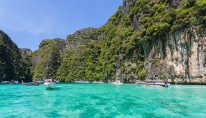
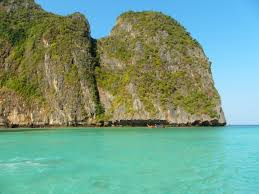

Welcome to the Official Padua Panda Travel Website!
Get to explore Ko Phi Phi, Thailand for a tremendous deal!

Ko Phi Phi is known for it's outrageously blueish green water. To explore the islands of Ko Phi Phi even more, one can go sailing on a group tour.

Visit Maya Bay to do anything from snorkeling to boating!
The charming islands of Ko Phi Phi is known for it's one of a kind scenery and views that will make any first-time visitors gasp. It's limestone cliffs surround the beautful turqoise colored sea. One can visit the water to go diving, snorkeling, swimming, and much more.
Things To Do In Ko Phi Phi:
Go to Bamboo Island, where you can snorkle at this glorious beach.
Visit Monkey Beach, one of Thailand's many beaches that is inhabited by monkeys.
Go to Maya Bay, an iconic cove which is surrounded by breathtaking cliffs.